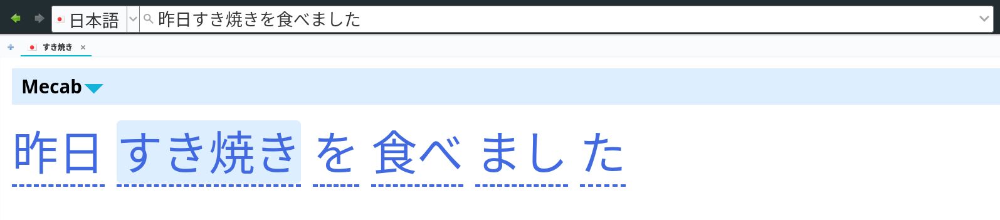

Setting up GoldenDict
GoldenDict is a libre dictionary application for GNU/Linux and other OSes. Like Qolibri, it lets you search multiple dictionaries at the same time so for every word you look up you immediately get a number of definitions. GoldenDict is a great tool for language learners, and it becomes especially helpful when one switches from bilingual dictionaries to monolingual dictionaries. It can aid during the monolingual transition thanks to the ability to look up many words at once in separate tabs, simplifying recursive look-ups.
Installation
GoldenDict is available as a free download from GitHub
or from repositories of many GNU distributions.
The most up-to-date version of GoldenDict
is a fork by xiaoyifang.
It can create Anki cards, which is important for people following the AJATT method.
Installation is easy and straightforward.
To install GoldenDict,
users of pacman-based distributions can use
this AUR package.
Simply running trizen -S goldendict-webengine-git should be sufficient.
Users of other distributions need to follow these instructions or clone the repository and build from source.
Obtain dictionaries
GoldenDict supports a wide range of dictionary formats, including EPWING and MDX. They can be downloaded by clicking on the provided links.
After download finishes, open GoldenDict, go to "Dictionaries" (F3) and specify the folders you've downloaded the dictionary files to under "Sources" > "Files".
Dictionary groups
Open "Dictionaries" (F3), go to "Groups" and create any groups you want. For example, you can have a group of dictionaries for learning English, Japanese, etc. Dictionaries can be added to a group by dragging and dropping.

Screenshot.
Place the dictionaries you like the most on top for easy access.
If you are new to monolingual dictionaries,
I recommend 明鏡, 大辞林, 大辞泉, 新明解.
During the monolingual transition,
having as many dictionaries enabled as possible will help you
find a definition that is easier to understand.
Hunspell dictionaries
Hunspell is a popular spell checker used by many applications, including GoldenDict. It helps deinflect Japanese words, catch typos and provide suggestions when searching. To set up Hunspell dictionaries in GoldenDict, users need to download and install them first.
Users of pacman-based distributions can install hunspell-ja-git. Others can install the package manually from GitHub.
If you are learning other languages, install Hunspell dictionaries for them too. For example:
The advantage of installing Hunspell dictionaries with pacman
(or the package manager of your distro)
is that all of them will be placed in the same directory: /usr/share/hunspell.
GoldenDict doesn't have an option to load Hunspell dictionaries from different folders.
Once installed, open GoldenDict, go to "Edit" > "Preferences" and finish setting them up.

Screenshot.
gd-tools
gd-tools
is a collection of tools for GoldenDict
that aim to help in learning foreign languages.
To install gd-tools, download the repository and run sudo make install.
Read the instructions on GitHub for details.

Screenshot.
External programs can be added by opening Preferences (F4) and going to "Sources" > "Programs".
Available features:
- Image search.
- Stroke order diagrams.
- Example sentences.
- Query Anki collection to see if you already have a card for the word you're lookin up.
Mecab splitting
gd-mecab is a part of gd-tools and can be used to split sentences into words.
Each word is clickable.
It allows you to look up a full sentence and then click on individual words.

Screenshot.
This feature relies on Mecab to work. Don't forget to install mecab-ipadic if you are on a pacman-based system or a similar package if you use another distro.
Anki integration
Read how to connect with anki to configure Anki integration. Additionally, you need AnkiConnect installed.

Screenshot.
On the "Network" tab fill the following fields:
- Deck: The name of your Anki deck.
- Model: The name of your Note Type
- Word: Headword, vocabulary
- Text: Selected text, definition.
- Sentence: The contents of the search bar.
To create a new Anki card, select the definition, right-click and select "Send to Anki".
Mpvacious setup
More information on Mpvacious is provided on subsequent pages.
Mpvacious can work with GoldenDict.
If you append autoclip_command=goldendict to the config file,
mpvacious will send every subtitle line directly to GoldenDict
instead of copying text to the system clipboard.
A video demonstration is available here.
Transformers OCR setup
More information on Transformers OCR is provided on subsequent pages.
Transformers OCR
can pass recognized text directly to GoldenDict
instead of copying text to the system clipboard.
To pair them up, append clip_command=goldendict to the config file.
Tips
Enable clipboard scanning
Many third-party programs, such as crqt-ng can copy text to the system clipboard when it is selected. GoldenDict can watch the clipboard and automatically perform lookups new text is copied.
To enable scanning, you can click on the light bulb icon on the toolbar. The feature can be configured under "Preferences" F4 > "Scan Popup".
Make the search bar larger
Japanese characters look tiny on the search bar. But you can click on it and press Alt++ to make it bigger.
Unclutter the top panel
Disabling "Edit" > "Dictionary bar" hides toggleable dictionaries.

Screenshot.
A wider search bar is more convenient when editing pasted sentences.
Remove duplicate display of EPWING headwords
Paste the code below in a file named article-style.css
in a folder with a name of your choosing in the styles folder of GoldenDict.
- GNU+Linux folder location:
~/.goldendict/styles/. - Windows-like (ReactOS) folder location:
C:\Users\<user>\AppData\Roaming\GoldenDict\styles\.
Restart GoldenDict and enable the style in "Edit" > "Preferences" > "Add-on style".
CSS for GoldenDict
/* Add padding and a horizontal bar between each entry for the sake of readability */
.mdict {
border-top: 0.15em solid #c4c4c4;
margin-bottom: 0.5em;
padding-top: 0.5em;
}
.gddictname {
position: relative;
z-index: 9;
margin-bottom: -0.16em;
}
/* Remove duplicate headers in EPWING dictionaries. */
.epwing_article h3 {
display: none;
}
.epwing_text:first-line {
text-indent: -1em;
}
.epwing_text {
padding-top: 0.5em;
padding-left: 1em;
border-top: 0.15em solid #c4c4c4;
margin-bottom: 0.5em;
}
Conclusion
GoldenDict is an excellent tool that offers users a comprehensive range of features. It is easy to install, set up, and users have access to a large number of dictionaries. The program is capable of generating Anki cards, which is ideal for people doing AJATT. Additionally, the option to create tabs makes it possible to do recursive look-ups.
Tags: guide, dictionaries